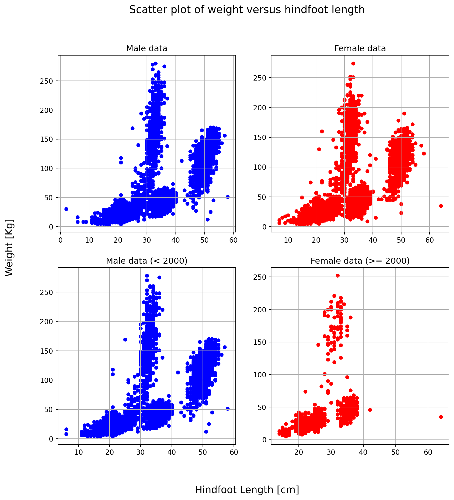

import pandas as pd
surveys_df = pd.read_csv('../../course_materials/data/surveys.csv') # in your notebook the path should be 'data/surveys.csv'11 Afternoon Exercises: Working with data
11.0.1 Exercise 0
Type the following commands and check the outputs. Can you tell what each command does? What is the difference between commands with and without parenthesis?
surveys_df.shape # Answer: the dimensions of the dataframe
surveys_df.columns # Answer: the column names of the dataframe
surveys_df.index # Answer: the index (row labels) of the dataframe
surveys_df.dtypes # Answer: the data types of each column
surveys_df.head(<try_various_integers_here>) # Answer: the first n rows of the dataframe
surveys_df.tail(<try_various_integers_here>) # Answer: the last n rows of the dataframe11.0.2 Exercise 1
Perform some basic statistics on the weight column. For practical reasons, it can be useful to first create a variable weight that contains the just the weight column. It will make the code look a bit cleaner. Can you tell what each method listed below does? Look at our explorative plot, do the statistics make sense?
weight=surveys_df['weight'] # Answer: creates a new variable that contains the weight column
weight.min() # Answer: the minimum value of the weight column
weight.max() # Answer: the maximum value of the weight column
weight.mean() # Answer: the mean value of the weight column
weight.std() # Answer: the standard deviation of the weight column
weight.count() # Answer: the number of non-NaN values in the weight column11.0.3 Exercise 2
- Swap the order of column names in
surveys_df[['plot_id', 'species_id']] - Repeat one of the column names like
surveys_df[['plot_id', 'plot_id', 'species_id']]. What do the results look like and why?
Answer: the column names are repeated and the data is displayed twice. Column names do not have to be unique.
- Which error occurs in
surveys_df['plot_id', 'species_id']and why?
Answer: KeyError: (‘plot_id’, ‘species_id’). The column names are not in a list. We need double square brackets to select multiple columns.
- Which error occurs in
surveys_df['speciess']?
Answer: KeyError: ‘speciess’. The column name does not exist. Typo.
print(surveys_df[['species_id', 'plot_id']]) species_id plot_id
0 NL 2
1 NL 3
2 DM 2
3 DM 7
4 DM 3
... ... ...
35544 AH 15
35545 AH 15
35546 RM 10
35547 DO 7
35548 NaN 5
[35549 rows x 2 columns]surveys_df[['plot_id', 'plot_id', 'species_id']]| plot_id | plot_id | species_id | |
|---|---|---|---|
| 0 | 2 | 2 | NL |
| 1 | 3 | 3 | NL |
| 2 | 2 | 2 | DM |
| 3 | 7 | 7 | DM |
| 4 | 3 | 3 | DM |
| ... | ... | ... | ... |
| 35544 | 15 | 15 | AH |
| 35545 | 15 | 15 | AH |
| 35546 | 10 | 10 | RM |
| 35547 | 7 | 7 | DO |
| 35548 | 5 | 5 | NaN |
35549 rows × 3 columns
surveys_df['plot_id', 'species_id'] KeyError: ('plot_id', 'species_id')surveys_df['speciess']KeyError: 'speciess'11.0.4 Exercise 3
What happens when you call:
surveys_df[0:1]Answer: shows the first row of the dataframesurveys_df[:4]Answer: shows the first 4 rows of the dataframe from index 0 to index 3surveys_df[:-1]Answer: shows all rows of the dataframe except the last row
surveys_df[0:1]
surveys_df[:4]
surveys_df[:-1] | record_id | month | day | year | plot_id | species_id | sex | hindfoot_length | weight | |
|---|---|---|---|---|---|---|---|---|---|
| 0 | 1 | 7 | 16 | 1977 | 2 | NL | M | 32.0 | NaN |
| 1 | 2 | 7 | 16 | 1977 | 3 | NL | M | 33.0 | NaN |
| 2 | 3 | 7 | 16 | 1977 | 2 | DM | F | 37.0 | NaN |
| 3 | 4 | 7 | 16 | 1977 | 7 | DM | M | 36.0 | NaN |
| 4 | 5 | 7 | 16 | 1977 | 3 | DM | M | 35.0 | NaN |
| ... | ... | ... | ... | ... | ... | ... | ... | ... | ... |
| 35543 | 35544 | 12 | 31 | 2002 | 15 | US | NaN | NaN | NaN |
| 35544 | 35545 | 12 | 31 | 2002 | 15 | AH | NaN | NaN | NaN |
| 35545 | 35546 | 12 | 31 | 2002 | 15 | AH | NaN | NaN | NaN |
| 35546 | 35547 | 12 | 31 | 2002 | 10 | RM | F | 15.0 | 14.0 |
| 35547 | 35548 | 12 | 31 | 2002 | 7 | DO | M | 36.0 | 51.0 |
35548 rows × 9 columns
11.0.5 Exercise 4
What happens in the following two examples?
surveys_df.iloc[0:4, 1:4];surveys_df.loc[0:4, 1:4].
How are the two commands different?
Answer: iloc uses integer indices, loc uses labels. The first command will return the first 4 rows and the columns with integer indices 1, 2 and 3. The second command will return the first 4 rows and the columns with labels 1, 2 and 3. Since there are no columns with these labels, the second command will return an error.
print(surveys_df.iloc[0:4, 1:4])
surveys_df.loc[0:4, 1:4] month day year
0 7 16 1977
1 7 16 1977
2 7 16 1977
3 7 16 1977TypeError: cannot do slice indexing on Index with these indexers [1] of type int11.0.6 Exercise 5
- Create a new DataFrame that only contains observations from the original with sex values that are not female or male. Print the number of rows in this new DataFrame. Verify the result by comparing the number of rows in the new DataFrame with the number of rows in the surveys DataFrame where sex is NaN (hint: there is a function
isnull).
df = surveys_df[(surveys_df['sex'] != 'M') & (surveys_df['sex'] != 'F')]
print("Number of rows not female or male:", len(df))
print("Number of rows NaN:", len(surveys_df['sex'].isnull()))
print("Unique values in column 'sex':", df['sex'].unique())Number of rows not female or male: 2511
Number of rows NaN: 35549
Unique values in column 'sex': [nan]11.0.7 Exercise 6: Putting it all together
- Clean the column sex (leave out samples of which we do not know whether they are male or female) and save the result as a new dataframe
clean_df. - Fill undefined weight values with the mean of all valid weights in
surveys_df. - Calculate the average weight of that new DataFrame
clean_df
# Step 1
# sex is 'F' or 'M'. The `|` means or.
clean_df = surveys_df[(surveys_df['sex']=='F') | (surveys_df['sex']=='M')]
# Alternative solution: select columns where 'not' sex is null. The `~` means not.
clean_df = surveys_df[~(surveys_df['sex'].isnull())]
# Step 2
clean_df.weight.fillna(surveys_df.weight.mean())
# Step 3
print("Average weight of surveys_df:", surveys_df.weight.mean())
print("Average weight of clean_df:", clean_df.weight.mean())Average weight of surveys_df: 42.672428212991356
Average weight of clean_df: 42.6031632589646411.0.8 Exercise 7
Let’s see in which plots animals get more food. Calculate the average weight per plot! Complete the code below.
grouped_data = surveys_df.groupby("plot_id")
grouped_data['weight'].mean()plot_id
1 51.822911
2 52.251688
3 32.654386
4 47.928189
5 40.947802
6 36.738893
7 20.663009
8 47.758001
9 51.432358
10 18.541219
11 43.451757
12 49.496169
13 40.445660
14 46.277199
15 27.042578
16 24.585417
17 47.889593
18 40.005922
19 21.105166
20 48.665303
21 24.627794
22 54.146379
23 19.634146
24 43.679167
Name: weight, dtype: float6411.0.9 Exercise 8
See below a more complex grouping example. Investigate the group keys and row indexes for this more complex grouping example. Why are there more than 48 groups? Answer: nan values are not ignored when grouping. Calculate the average weight per group. What happened to the third group and why does it not turn up in our statistics? Answer: the third group contains only nan values and is therefore not included in the statistics.
grouped_data = surveys_df.groupby(['sex', 'plot_id'])
print(len(grouped_data.groups))
grouped_data.groups.keys()72dict_keys([('F', 1), ('F', 2), ('F', 3), ('F', 4), ('F', 5), ('F', 6), ('F', 7), ('F', 8), ('F', 9), ('F', 10), ('F', 11), ('F', 12), ('F', 13), ('F', 14), ('F', 15), ('F', 16), ('F', 17), ('F', 18), ('F', 19), ('F', 20), ('F', 21), ('F', 22), ('F', 23), ('F', 24), ('M', 1), ('M', 2), ('M', 3), ('M', 4), ('M', 5), ('M', 6), ('M', 7), ('M', 8), ('M', 9), ('M', 10), ('M', 11), ('M', 12), ('M', 13), ('M', 14), ('M', 15), ('M', 16), ('M', 17), ('M', 18), ('M', 19), ('M', 20), ('M', 21), ('M', 22), ('M', 23), ('M', 24), (nan, 1), (nan, 2), (nan, 3), (nan, 4), (nan, 5), (nan, 6), (nan, 7), (nan, 8), (nan, 9), (nan, 10), (nan, 11), (nan, 12), (nan, 13), (nan, 14), (nan, 15), (nan, 16), (nan, 17), (nan, 18), (nan, 19), (nan, 20), (nan, 21), (nan, 22), (nan, 23), (nan, 24)])grouped_data['weight'].mean()sex plot_id
F 1 46.311138
2 52.561845
3 31.215349
4 46.818824
5 40.974806
6 36.352288
7 20.006135
8 45.623011
9 53.618469
10 17.094203
11 43.515075
12 49.831731
13 40.524590
14 47.355491
15 26.670236
16 25.810427
17 48.176201
18 36.963514
19 21.978599
20 52.624406
21 25.974832
22 53.647059
23 20.564417
24 47.914405
M 1 55.950560
2 51.391382
3 34.163241
4 48.888119
5 40.708551
6 36.867388
7 21.194719
8 49.641372
9 49.519309
10 19.971223
11 43.366197
12 48.909710
13 40.097754
14 45.159378
15 27.523691
16 23.811321
17 47.558853
18 43.546952
19 20.306878
20 44.197279
21 22.772622
22 54.572531
23 18.941463
24 39.321503
Name: weight, dtype: float6411.0.10 Exercise 9
Would it make sense to group our data frame by the column weight? Why or why not?
# In real life nearly every sample has a unique value. So nearly every sample would
# be placed in an own group.
# In our training data you can see that there are quite some values for weight. So
# usually it is not a good idea to categorise (group) data on such values.
print("Number of rows:", len(surveys_df))
print(len(surveys_df['weight'].unique())) #includes nan
print(len(surveys_df.groupby(['weight']).groups)) #does not include nanNumber of rows: 35549
256
25511.0.11 Exercise 10
In the given example of vertical concatenation, you concatenated two DataFrames with the same columns. What would happen if the two DataFrames to concatenate have different column number and names?
- Create a new DataFrame using the last 10 rows of the species DataFrame (
species_df); - Concatenate vertically
surveys_df_sub_first10and your just created DataFrame; - Print the concatenated DataFrame info on the screen. How may rows does it have? What happened to the columns? Explain why you get this result.
species_df = pd.read_csv("../../course_materials/data/species.csv")
species_df_sub_last10 = species_df.tail(10)
surveys_df_sub_first10 = surveys_df.head(10)
vert_concat = pd.concat([surveys_df_sub_first10, species_df_sub_last10], axis=0)
vert_concat| record_id | month | day | year | plot_id | species_id | sex | hindfoot_length | weight | genus | species | taxa | |
|---|---|---|---|---|---|---|---|---|---|---|---|---|
| 0 | 1.0 | 7.0 | 16.0 | 1977.0 | 2.0 | NL | M | 32.0 | NaN | NaN | NaN | NaN |
| 1 | 2.0 | 7.0 | 16.0 | 1977.0 | 3.0 | NL | M | 33.0 | NaN | NaN | NaN | NaN |
| 2 | 3.0 | 7.0 | 16.0 | 1977.0 | 2.0 | DM | F | 37.0 | NaN | NaN | NaN | NaN |
| 3 | 4.0 | 7.0 | 16.0 | 1977.0 | 7.0 | DM | M | 36.0 | NaN | NaN | NaN | NaN |
| 4 | 5.0 | 7.0 | 16.0 | 1977.0 | 3.0 | DM | M | 35.0 | NaN | NaN | NaN | NaN |
| 5 | 6.0 | 7.0 | 16.0 | 1977.0 | 1.0 | PF | M | 14.0 | NaN | NaN | NaN | NaN |
| 6 | 7.0 | 7.0 | 16.0 | 1977.0 | 2.0 | PE | F | NaN | NaN | NaN | NaN | NaN |
| 7 | 8.0 | 7.0 | 16.0 | 1977.0 | 1.0 | DM | M | 37.0 | NaN | NaN | NaN | NaN |
| 8 | 9.0 | 7.0 | 16.0 | 1977.0 | 1.0 | DM | F | 34.0 | NaN | NaN | NaN | NaN |
| 9 | 10.0 | 7.0 | 16.0 | 1977.0 | 6.0 | PF | F | 20.0 | NaN | NaN | NaN | NaN |
| 44 | NaN | NaN | NaN | NaN | NaN | SS | NaN | NaN | NaN | Spermophilus | spilosoma | Rodent |
| 45 | NaN | NaN | NaN | NaN | NaN | ST | NaN | NaN | NaN | Spermophilus | tereticaudus | Rodent |
| 46 | NaN | NaN | NaN | NaN | NaN | SU | NaN | NaN | NaN | Sceloporus | undulatus | Reptile |
| 47 | NaN | NaN | NaN | NaN | NaN | SX | NaN | NaN | NaN | Sigmodon | sp. | Rodent |
| 48 | NaN | NaN | NaN | NaN | NaN | UL | NaN | NaN | NaN | Lizard | sp. | Reptile |
| 49 | NaN | NaN | NaN | NaN | NaN | UP | NaN | NaN | NaN | Pipilo | sp. | Bird |
| 50 | NaN | NaN | NaN | NaN | NaN | UR | NaN | NaN | NaN | Rodent | sp. | Rodent |
| 51 | NaN | NaN | NaN | NaN | NaN | US | NaN | NaN | NaN | Sparrow | sp. | Bird |
| 52 | NaN | NaN | NaN | NaN | NaN | ZL | NaN | NaN | NaN | Zonotrichia | leucophrys | Bird |
| 53 | NaN | NaN | NaN | NaN | NaN | ZM | NaN | NaN | NaN | Zenaida | macroura | Bird |
We get a total of 20 rows and 12 columns. The original dataframes together had a total of 13 columns. As they both have a column species_id, this one is collapsed. All other columns are padded with NaN values. We expect 20 rows, as we are putting two DataFrames of 10 rows one after the other. The padding of the columns happens because these two DataFrames do not have the same column names. To keep all the information that was in the original DataFrames, the padding of columns that occur in only one of the two is necessary.
11.0.12 Exercise 11
- Looking at the
inner_joinexample, can you explain how much of each of the two DataFrames is missing from the result?
Now consider the other types of joins, for each one, can you predict the number of rows and the contents of the resulting DataFrame, based on the diagrams in the picture?
For the outer join;
For the left join;
For the right join.
From the left DataFrame, three rows are not included in the
inner_joinDataFrame. This is because they have a value in theirspecies_idcolumn that is not present in the right DataFrame. From the right DataFrame, the information of 18 rows is missing from the result. This is because theirspecies_idcolumn has a value that does not occur in the left DataFrame. Note that the information from the two rows that are represented in the result is duplicated a number of times, as theirspecies_idvalue occurs multiple times in the left DataFrame.The result has a total of 28 rows. You may notice that the first seven of those rows are the same as the result of the inner join, followed by the three rows from the left DataFrame that are not represented in the inner join, and finally, the 18 rows from the right DataFrame that are not represented in the inner join. This makes for a total of 7 + 3 + 18 = 28 rows. The outer join preserves all the information from both the left and right DataFrames.
# 2.
left_df = surveys_df.head(10)
right_df = species_df.head(20)
outer_join = pd.merge(left_df, right_df, left_on='species_id', right_on='species_id', how='outer')
outer_join| record_id | month | day | year | plot_id | species_id | sex | hindfoot_length | weight | genus | species | taxa | |
|---|---|---|---|---|---|---|---|---|---|---|---|---|
| 0 | 1.0 | 7.0 | 16.0 | 1977.0 | 2.0 | NL | M | 32.0 | NaN | Neotoma | albigula | Rodent |
| 1 | 2.0 | 7.0 | 16.0 | 1977.0 | 3.0 | NL | M | 33.0 | NaN | Neotoma | albigula | Rodent |
| 2 | 3.0 | 7.0 | 16.0 | 1977.0 | 2.0 | DM | F | 37.0 | NaN | Dipodomys | merriami | Rodent |
| 3 | 4.0 | 7.0 | 16.0 | 1977.0 | 7.0 | DM | M | 36.0 | NaN | Dipodomys | merriami | Rodent |
| 4 | 5.0 | 7.0 | 16.0 | 1977.0 | 3.0 | DM | M | 35.0 | NaN | Dipodomys | merriami | Rodent |
| 5 | 8.0 | 7.0 | 16.0 | 1977.0 | 1.0 | DM | M | 37.0 | NaN | Dipodomys | merriami | Rodent |
| 6 | 9.0 | 7.0 | 16.0 | 1977.0 | 1.0 | DM | F | 34.0 | NaN | Dipodomys | merriami | Rodent |
| 7 | 6.0 | 7.0 | 16.0 | 1977.0 | 1.0 | PF | M | 14.0 | NaN | NaN | NaN | NaN |
| 8 | 10.0 | 7.0 | 16.0 | 1977.0 | 6.0 | PF | F | 20.0 | NaN | NaN | NaN | NaN |
| 9 | 7.0 | 7.0 | 16.0 | 1977.0 | 2.0 | PE | F | NaN | NaN | NaN | NaN | NaN |
| 10 | NaN | NaN | NaN | NaN | NaN | AB | NaN | NaN | NaN | Amphispiza | bilineata | Bird |
| 11 | NaN | NaN | NaN | NaN | NaN | AH | NaN | NaN | NaN | Ammospermophilus | harrisi | Rodent |
| 12 | NaN | NaN | NaN | NaN | NaN | AS | NaN | NaN | NaN | Ammodramus | savannarum | Bird |
| 13 | NaN | NaN | NaN | NaN | NaN | BA | NaN | NaN | NaN | Baiomys | taylori | Rodent |
| 14 | NaN | NaN | NaN | NaN | NaN | CB | NaN | NaN | NaN | Campylorhynchus | brunneicapillus | Bird |
| 15 | NaN | NaN | NaN | NaN | NaN | CM | NaN | NaN | NaN | Calamospiza | melanocorys | Bird |
| 16 | NaN | NaN | NaN | NaN | NaN | CQ | NaN | NaN | NaN | Callipepla | squamata | Bird |
| 17 | NaN | NaN | NaN | NaN | NaN | CS | NaN | NaN | NaN | Crotalus | scutalatus | Reptile |
| 18 | NaN | NaN | NaN | NaN | NaN | CT | NaN | NaN | NaN | Cnemidophorus | tigris | Reptile |
| 19 | NaN | NaN | NaN | NaN | NaN | CU | NaN | NaN | NaN | Cnemidophorus | uniparens | Reptile |
| 20 | NaN | NaN | NaN | NaN | NaN | CV | NaN | NaN | NaN | Crotalus | viridis | Reptile |
| 21 | NaN | NaN | NaN | NaN | NaN | DO | NaN | NaN | NaN | Dipodomys | ordii | Rodent |
| 22 | NaN | NaN | NaN | NaN | NaN | DS | NaN | NaN | NaN | Dipodomys | spectabilis | Rodent |
| 23 | NaN | NaN | NaN | NaN | NaN | DX | NaN | NaN | NaN | Dipodomys | sp. | Rodent |
| 24 | NaN | NaN | NaN | NaN | NaN | EO | NaN | NaN | NaN | Eumeces | obsoletus | Reptile |
| 25 | NaN | NaN | NaN | NaN | NaN | GS | NaN | NaN | NaN | Gambelia | silus | Reptile |
| 26 | NaN | NaN | NaN | NaN | NaN | NX | NaN | NaN | NaN | Neotoma | sp. | Rodent |
| 27 | NaN | NaN | NaN | NaN | NaN | OL | NaN | NaN | NaN | Onychomys | leucogaster | Rodent |
- Ten rows. The resulting DataFrame closely resembles the original left DataFrame, but with information from the right DataFrame added to it, where applicable.
# 3.
left_join = pd.merge(left_df, right_df, left_on='species_id', right_on='species_id', how='left')
left_join| record_id | month | day | year | plot_id | species_id | sex | hindfoot_length | weight | genus | species | taxa | |
|---|---|---|---|---|---|---|---|---|---|---|---|---|
| 0 | 1 | 7 | 16 | 1977 | 2 | NL | M | 32.0 | NaN | Neotoma | albigula | Rodent |
| 1 | 2 | 7 | 16 | 1977 | 3 | NL | M | 33.0 | NaN | Neotoma | albigula | Rodent |
| 2 | 3 | 7 | 16 | 1977 | 2 | DM | F | 37.0 | NaN | Dipodomys | merriami | Rodent |
| 3 | 4 | 7 | 16 | 1977 | 7 | DM | M | 36.0 | NaN | Dipodomys | merriami | Rodent |
| 4 | 5 | 7 | 16 | 1977 | 3 | DM | M | 35.0 | NaN | Dipodomys | merriami | Rodent |
| 5 | 6 | 7 | 16 | 1977 | 1 | PF | M | 14.0 | NaN | NaN | NaN | NaN |
| 6 | 7 | 7 | 16 | 1977 | 2 | PE | F | NaN | NaN | NaN | NaN | NaN |
| 7 | 8 | 7 | 16 | 1977 | 1 | DM | M | 37.0 | NaN | Dipodomys | merriami | Rodent |
| 8 | 9 | 7 | 16 | 1977 | 1 | DM | F | 34.0 | NaN | Dipodomys | merriami | Rodent |
| 9 | 10 | 7 | 16 | 1977 | 6 | PF | F | 20.0 | NaN | NaN | NaN | NaN |
- 25 rows. The resulting DataFrame closely resembles the original right DataFrame, but with information from the left DataFrame added to it, where applicable. Note that rows from the right DataFrame that have multiple matching rows in the left DataFrame are duplicated.
# 4.
right_join = pd.merge(left_df, right_df, left_on='species_id', right_on='species_id', how='right')
right_join| record_id | month | day | year | plot_id | species_id | sex | hindfoot_length | weight | genus | species | taxa | |
|---|---|---|---|---|---|---|---|---|---|---|---|---|
| 0 | NaN | NaN | NaN | NaN | NaN | AB | NaN | NaN | NaN | Amphispiza | bilineata | Bird |
| 1 | NaN | NaN | NaN | NaN | NaN | AH | NaN | NaN | NaN | Ammospermophilus | harrisi | Rodent |
| 2 | NaN | NaN | NaN | NaN | NaN | AS | NaN | NaN | NaN | Ammodramus | savannarum | Bird |
| 3 | NaN | NaN | NaN | NaN | NaN | BA | NaN | NaN | NaN | Baiomys | taylori | Rodent |
| 4 | NaN | NaN | NaN | NaN | NaN | CB | NaN | NaN | NaN | Campylorhynchus | brunneicapillus | Bird |
| 5 | NaN | NaN | NaN | NaN | NaN | CM | NaN | NaN | NaN | Calamospiza | melanocorys | Bird |
| 6 | NaN | NaN | NaN | NaN | NaN | CQ | NaN | NaN | NaN | Callipepla | squamata | Bird |
| 7 | NaN | NaN | NaN | NaN | NaN | CS | NaN | NaN | NaN | Crotalus | scutalatus | Reptile |
| 8 | NaN | NaN | NaN | NaN | NaN | CT | NaN | NaN | NaN | Cnemidophorus | tigris | Reptile |
| 9 | NaN | NaN | NaN | NaN | NaN | CU | NaN | NaN | NaN | Cnemidophorus | uniparens | Reptile |
| 10 | NaN | NaN | NaN | NaN | NaN | CV | NaN | NaN | NaN | Crotalus | viridis | Reptile |
| 11 | 3.0 | 7.0 | 16.0 | 1977.0 | 2.0 | DM | F | 37.0 | NaN | Dipodomys | merriami | Rodent |
| 12 | 4.0 | 7.0 | 16.0 | 1977.0 | 7.0 | DM | M | 36.0 | NaN | Dipodomys | merriami | Rodent |
| 13 | 5.0 | 7.0 | 16.0 | 1977.0 | 3.0 | DM | M | 35.0 | NaN | Dipodomys | merriami | Rodent |
| 14 | 8.0 | 7.0 | 16.0 | 1977.0 | 1.0 | DM | M | 37.0 | NaN | Dipodomys | merriami | Rodent |
| 15 | 9.0 | 7.0 | 16.0 | 1977.0 | 1.0 | DM | F | 34.0 | NaN | Dipodomys | merriami | Rodent |
| 16 | NaN | NaN | NaN | NaN | NaN | DO | NaN | NaN | NaN | Dipodomys | ordii | Rodent |
| 17 | NaN | NaN | NaN | NaN | NaN | DS | NaN | NaN | NaN | Dipodomys | spectabilis | Rodent |
| 18 | NaN | NaN | NaN | NaN | NaN | DX | NaN | NaN | NaN | Dipodomys | sp. | Rodent |
| 19 | NaN | NaN | NaN | NaN | NaN | EO | NaN | NaN | NaN | Eumeces | obsoletus | Reptile |
| 20 | NaN | NaN | NaN | NaN | NaN | GS | NaN | NaN | NaN | Gambelia | silus | Reptile |
| 21 | 1.0 | 7.0 | 16.0 | 1977.0 | 2.0 | NL | M | 32.0 | NaN | Neotoma | albigula | Rodent |
| 22 | 2.0 | 7.0 | 16.0 | 1977.0 | 3.0 | NL | M | 33.0 | NaN | Neotoma | albigula | Rodent |
| 23 | NaN | NaN | NaN | NaN | NaN | NX | NaN | NaN | NaN | Neotoma | sp. | Rodent |
| 24 | NaN | NaN | NaN | NaN | NaN | OL | NaN | NaN | NaN | Onychomys | leucogaster | Rodent |
11.0.13 Exercise 12
Time to play with plots! Create a multiplot following these instructions: - Using the matplotlib.pyplot function subplots(), create a single figure (10x10 inches) with four subplots organized in two rows and two columns; - In the top row plot hindfoot_length VS weight for female and male in two different plots with two different colors; - In the bottom row, plot the same data of the top row, but using data collected before (left plot) and after (right plot) 1990; - Give to each plot an appropriate descriptive title and customize the plot labels.
Feel free to use the DataFrame plot method or plt.scatter function to plot data points, but be awave that, in any case, the first thing to do is creating Figure and Axes.
EXTRA: The four plots have same x and y axes spanning the same range. Can you remove the space between the four plots? Try it!
from matplotlib import pyplot as plt
fig, axes = plt.subplots(2,2,figsize=(10,10)) # prepare a matplotlib figure
# Top left plot, male data
surveys_df[surveys_df['sex']=='M'].plot("hindfoot_length", "weight", kind="scatter", ax=axes[0][0], color='blue')
axes[0][0].set_title('Male data')
axes[0][0].grid()
# Top right plot, female data
surveys_df[surveys_df['sex']=='F'].plot("hindfoot_length", "weight", kind="scatter", ax=axes[0][1], color='red')
axes[0][1].set_title('Female data')
axes[0][1].grid()
year = 2000
# Bottom left plot, male data
surveys_df[(surveys_df['sex']=='M') & (surveys_df['year'] < year)].plot("hindfoot_length", "weight", kind="scatter", ax=axes[1][0], color='blue')
axes[1][0].set_title(f'Male data (< {year})')
axes[1][0].grid()
# Bottom right plot, male data
surveys_df[(surveys_df['sex']=='F') & (surveys_df['year'] >= year)].plot("hindfoot_length", "weight", kind="scatter", ax=axes[1][1], color='red')
axes[1][1].set_title(f'Female data (>= {year})')
axes[1][1].grid()
# Removing individual plot labels
for i in range(2):
for j in range(2):
axes[i][j].set_xlabel('')
axes[i][j].set_ylabel('')
# Initializing figure labels
fig.supxlabel("Hindfoot Length [cm]",fontsize=14)
fig.supylabel("Weight [Kg]",fontsize=14)
fig.suptitle('Scatter plot of weight versus hindfoot length', fontsize=15)Text(0.5, 0.98, 'Scatter plot of weight versus hindfoot length')